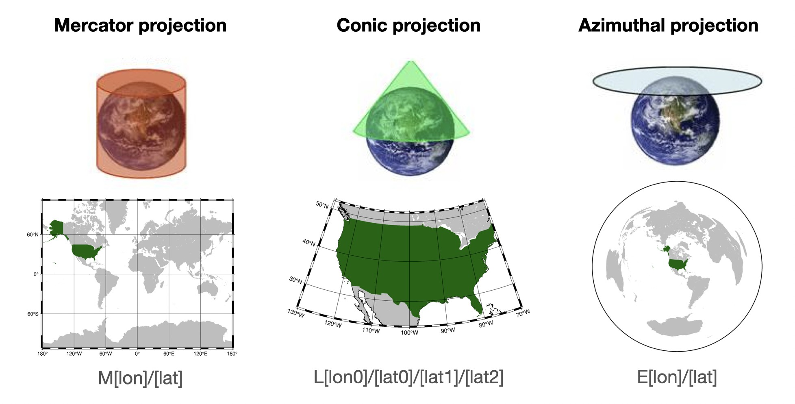

Tutorial 1 - First figure 🚀 and Subplots / layout#
This tutorial will cover the fundamental concepts behind making figures with PyGMT:
Drawing coastlines
Drawing a map frame
Choosing a projection
Downloading remote dataset
Imaging Earth’s relief
Creating colorbar
Subplot in a figure
Note
This tutorial is part of the AGU24 annual meeting GMT/PyGMT pre-conference workshop (PREWS9) Mastering Geospatial Visualizations with GMT/PyGMT
Website: https://www.generic-mapping-tools.org/agu24workshop
Conference: https://agu.confex.com/agu/agu24/meetingapp.cgi/Session/226736
History
Author: Jing-Hui Tong
Created: November-December 2024
Recommended versions: PyGMT v0.13.0 with GMT 6.5.0
References
Liam Toney, 2021 IRIS ROSES unit05
Chih-Ming Lin, GMT courses for 2019 NTNUES summer program
Fee free to play around with these code examples 🚀. In case you found any kind of error, just report it by opening an issue or provide a fix via a pull request. Please use the GMT forum to ask questions.
Tip
In Jupyter, some shortcut key will increase your learning curve!
Run cell:
Shift+EnterCode indentation:
TABCode dedenting:
Shift+TABWriting single-line comments: beginning with # or
Command+/Auto-completion:
TABwhile you writing some code
0️⃣ Importing#
First thing to do is load PyGMT (import) so that we can access its functionality.
PyGMT has a flat package layout, meaning that you can access everything in it with a single import.
import pygmt
1️⃣ Starting your first figure – pygmt.Figure#
Every figure must start with the creation of a pygmt.Figure()
fig = pygmt.Figure()
We have blank canvas in the fig variable now, we will overlay elements and show it on same fig.
1.1 Drawing coastline – pygmt.Figure.coast#
Before plotting, you need to define
region: Controlling the geographic or Cartesian extent of the figure. Regions are specified as lists of[xmin, xmax, ymin, ymax]. Another shortcut,region="g", which specifies a global domain.projection: Controlling the map projection. GMT (and therefore PyGMT) supports 31 different map projections, from basic Cartesian axes to arbitrary vertical perspectives.
Determining the size of your images
10c, the size will affect how large of your following font size and marker sizelength unit
c: centimeter (default)
More projections please click https://www.pygmt.org/v0.13.0/projections/index.html
region = [-180, -150, 50, 65]
fig.coast(region=region, projection="M10c", shorelines=True)
# To see the figure looks like
fig.show()
{kind=link}
See also
On Jupyter, show will embed a PNG of the figure directly into the notebook. But it can also open a PDF in an external viewer, which is probably what you want if you’re using a plain Python script. See the documentation for pygmt.Figure.show for more information.
See also
If the image size is too small, the default annotation fonts may appear disproportionately large, impacting the overall visual balance and readability.
1.2 Coloring and add map element (frame and ticks)#
axis labels
WSne: If an upper-case letter (W, S, N, E) is passed, the axis is plotted with tick marks and annotations. The lower-case version (w, s, n, e) plots the axis only with tick marks. To only plot the axis pass (l, b, t, r).annotations
a: tick labelsframe
f: ticksgrid
g: grid line in the figure.
More detail for frame https://www.pygmt.org/v0.13.0/tutorials/basics/frames.html
fig.coast(water="lightblue", land="grey", frame=["WSne", "a10f5g5"])
fig.show()
{kind=link}
1.3 Stacking approach of GMT / PyGMT#
In GMT/PyGMT, plotting is achieved by layering new elements, meaning that each new element is stacked on top of the previous layers. Therefore, if you draw a black line in an earlier layer and then add a new layer (such as color filling), these new layers might cover the original black line, making it invisible.
In a same figure, once you define region/projection before, you don’t need to define again.
2️⃣ Downloading global dataset – pygmt.datasets#
Before you access remote dataset from PyGMT, you need to define
region: Region of interest, format is [xmin, xmax, ymin, ymax]resolution: Grid resolution. The suffix d (arc-degrees), m (arc-minutes), and s (arc-seconds).
grid = pygmt.datasets.load_earth_relief(resolution="03m", region=region)
# You also can access then cut the grid
# and this way can save grid (outgrid) as a file in your folder.
# https://www.generic-mapping-tools.org/remote-datasets/
# pygmt.grdcut(
# grid="@earth_relief_03m", region=region, outgrid="Alaska.grd"
# )
grdblend [NOTICE]: Remote data courtesy of GMT data server oceania [http://oceania.generic-mapping-tools.org]
grdblend [NOTICE]: SRTM15 Earth Relief v2.6 at 03x03 arc minutes reduced by Gaussian Cartesian filtering (15.7 km fullwidth) [Tozer et al., 2019].
grdblend [NOTICE]: -> Download 90x90 degree grid tile (earth_relief_03m_g): N00W180
A way to confirm your grid information pygmt.grdinfo
print(pygmt.grdinfo(grid=grid))
: Title:
: Command:
: Remark:
: Gridline node registration used [Geographic grid]
: Grid file format: nf = GMT netCDF format (32-bit float), CF-1.7
: x_min: -180 x_max: -150 x_inc: 0.05 (3 min) name: x n_columns: 601
: y_min: 50 y_max: 65 y_inc: 0.05 (3 min) name: y n_rows: 301
: v_min: -7521.5 v_max: 4634 name: z
: scale_factor: 1 add_offset: 0
: format: classic
: Default CPT:
3️⃣ Visualizing grid – pygmt.Figure.grdimage#
Project and plot grids or images
Now, we start with a new canvas. So you need to set up region/projection again!
Before imaging, you need to define
grid: Specifies the grid file (e.g., a topographic grid) from which data will be sampled.
fig = pygmt.Figure()
fig.grdimage(grid=grid, region=region, projection="M10c")
fig.coast(shorelines="1p,black", frame=["WSne", "a5f2.5"])
fig.show()
{kind=link}
3.1 Customizing colorbar – pygmt.makecpt#
Making GMT color palette tables (CPT).
You need to define:
cmap: Choosing a colormap to image your grid/dataset.
More colormap resources https://docs.generic-mapping-tools.org/6.5/_images/GMT_App_M_1a.png
{kind=link}
series: Defining the range of the CPT by giving the lowest and highest z-value. e.g., [0, 500] (without interval) or [0, 500, 10] (defining the interval)
pygmt.makecpt(
cmap="geo",
series=[-8000, 7000, 500],
continuous=True,
# The file name with extension .cpt to store the generated CPT file
output="eleva.cpt",
)
Now, re-plot the figure with new colormap and …
3.2 Adding pygmt.Figure.colorbar#
Plot a gray or color scale-bar on maps.
You need to define,
cmap: File name of a CPT fileframe: Setting color bar boundary frame, labels, and axes attributes+l given colorbar title
position: Defining the reference point on the map for the color scaleFour coordinate systems:
g for map (user) coordinates
j or J for setting reference point via a 2-character justification code
x for plot coordinates: x/y (specific position)
n for normalized (0-1) coordinates
Others
+w for length and width of the color bar. e.g., +w10c/0.5c
+h horizontal colorbar, if you want to plot vertical one, use +v
+m for colorbar title position
fig = pygmt.Figure()
fig.grdimage(grid=grid, region=region, projection="M10c", cmap="eleva.cpt")
fig.coast(shorelines="1p,black", frame=["WSne", "a5f2.5"])
fig.colorbar(
cmap="eleva.cpt",
frame="a2000f500+lElevation (m)",
position="JBC+w10c/0.4c+mc+h",
)
fig.show()
{kind=link}
4️⃣ Creating multi-panel figures in a canvas – pygmt.Figure.subplot and pygmt.Figure.set_panel#
You need to define the figure layout with figure.subplot:
nrows: Number of vertical rowsncols: Number of horizontal columnsfigsizeorsubsize: Entire figure dimensions, e.g., [width, height]
Second, setting each plot with figure.set_panel:
panel: Setting the current subplot panel to plot on. e.g., index or [row, col]
fig = pygmt.Figure()
grid_crust_age = pygmt.datasets.load_earth_age(
resolution="30m", region=[-210, -150, 35, 65]
)
with fig.subplot(nrows=1, ncols=2, figsize=["18c", "12c"]):
with fig.set_panel(panel=0):
fig.grdimage(
grid=grid,
region=region,
# "?" means that map width automatically determined from the subplot width.
projection="M?",
cmap="eleva.cpt",
)
fig.coast(shorelines="1p,black", frame=["WSne", "a5f2.5"])
fig.colorbar(
cmap="eleva.cpt",
position="JBC+w8c/0.3c+mc+h",
frame="a2000f500+lElevation (m)",
)
with fig.set_panel(panel=1):
pygmt.makecpt(cmap="@earth_age.cpt", series=[0, 340])
fig.grdimage(
grid=grid_crust_age,
region=[-210, -150, 35, 65],
# changing projection method
projection="L-180/55/35/65/?",
frame=["a5f2.5", "SEnw"],
cmap=True,
)
fig.colorbar(
position="JBC+w6c/0.3c+mc+h", frame="a40f20+lSeafloor crustal age (Ma)"
)
fig.show()
gmtread [NOTICE]: Remote data courtesy of GMT data server oceania [http://oceania.generic-mapping-tools.org]
gmtread [NOTICE]: EarthByte Earth Seafloor Age at 30x30 arc minutes reduced by Gaussian Cartesian filtering (157.3 km fullwidth) [Seton et al., 2020].
gmtread [NOTICE]: -> Download grid file [205K]: earth_age_30m_g.grd
{kind=link}
5️⃣ Basic projection types#
 By default, PyGMT will use an equidistant cylindrical projection if the region seems to be geographic longitude and latitude.Mercator Projection – mapping the Earth onto a cylinder, preserving angles, making it useful for navigational purposes.
Use Case: Ideal for world maps where direction needs to be preserved, such as marine navigation. This projection distorts size, especially near the poles.
GMT Command: M[lon]/[lat], specifying the central longitude and latitude.
Conic Projection – projecting the Earth onto a cone.
Use Case: for regional maps, especially in mid-latitude countries, where distortion of shapes and areas is minimized within specific latitude ranges.
GMT Command: L[lon0]/[lat0]/[lat1]/[lat2], where lon0 and lat0 define the projection center and lat1/lat2 define the standard parallels.
Azimuthal Projection – projecting the Earth onto a plane, preserving directions from a central point.
Use Case: Suitable for mapping polar regions or any area where direction from a central point is essential.
GMT Command: E[lon]/[lat], with lon and lat defining the central point.